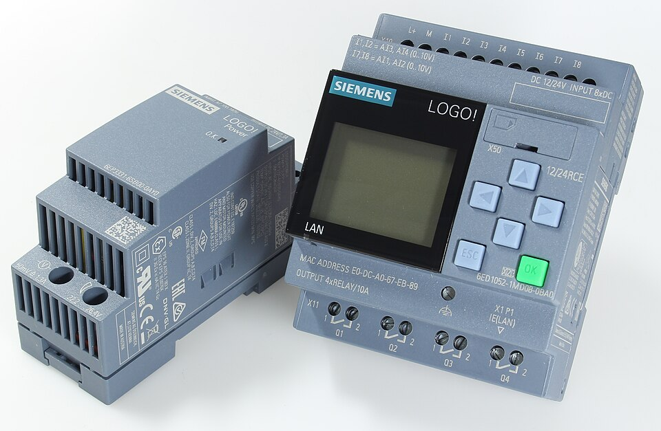

Wait for a durable station receipt before clearing a result
A robot has placed a part and the record service stops answering. Use a compiled PLC function block and a real SQLite journal to decide when the station can acknowledge that result.

Photo by MakeMagazinDE, resized. Original photograph · CC BY-SA 4.0.

Watch. Trace the output contact to a field signal. Then mark the extra step where your controller saves a completion before acknowledging it. RealPars · Convert a wiring diagram to a PLC program.
Separate the part, the record and the receipt
In this training cell, the robot holds its completed result until the station acknowledges it. The pending candidate binds the cell session, job ordinal, part serial and proof generation. The journal counts a good part only after its own inspection and placement checks. The PLC accepts a positive receipt for that same record while the candidate is still present and the link is healthy. The exercise uses no equipment or motion outputs.
A delivery timeout leaves two plausible histories. The worker may have exited before committing, or it may have committed and exited before replying. The PLC returns to review in both cases. Once the part evidence has been checked and a fresh review edge arrives, the same event ID is retried. The first history creates the record and the second returns the recorded outcome.
Build the function block and run the interrupted worker
Save these files into one directory. Use a Linux C compiler, Python 3 with SQLite, and the MatIEC setup from P161. The observed run used Ubuntu 24.04 ARM64 and MatIEC commit c316fe57e335381cbe91f61c7366857198580ac7.
- IEC function block · C adapter · Python replay
- P162 journal · P162 training events · Observed scan and database trace
MATIEC="$HOME/matiec"
mkdir -p generated
"$MATIEC/iec2c" -I "$MATIEC/lib" -T generated receipt_gate.st
cc -std=gnu11 -O2 -fPIC -shared -I generated -I "$MATIEC/lib/C" \
receipt_adapter.c -lm -o generated/receipt_gate.so
python3 replay_receipts.py generated/receipt_gate.so station-events.csv run-oneSet MATIEC to your built checkout. Choose a fresh last argument for repeat runs. The replay drives scan times from a synthetic millisecond clock and creates separate training databases for each scenario. The two worker exits and SQLite commits occur in real processes.
Compare the visible state with the committed count
| Attempt | What the station sees | What the record proves |
|---|---|---|
| Normal delivery | Wrong part receipt at 30 ms leaves the gate waiting. Matching receipt at 210 ms is accepted, exactly 200 ms after review. | One committed part. The same result can read acknowledgment until its evidence disappears. |
| Exit before commit | No reply at 70 ms. Review state at 210 ms. Link recovery alone leaves the gate in review. | Zero committed parts before retry. After a new review at 250 ms, the retry commits once. |
| Exit after commit | The timeout and review are identical. Even a later status response does not clear the hold by itself. | One committed part before retry. After a new review, the same event ID returns the committed outcome and the count stays one. |
| Prior proof or late receipt | Generation 1 cannot satisfy a request for generation 2. A matching receipt at 201 ms across clock wrap is rejected. | The old completion remains stored and is insufficient proof for a different candidate. A separate check at exactly 200 ms accepts the matching receipt. |
The receipt deadline is a policy in this example. The wait starts at the review scan. At the deadline, an already visible matching receipt wins over timeout. A later receipt stays held. The PLC must continue scanning for that policy to take effect. Choose a separate supervision mechanism and budget from measured delays for a live controller.
Decide what to do with an ambiguous handoff
- Find the first row in each interrupted trace where the PLC is in review. Keep the physical part evidence and the committed record separate in your diagnosis.
- Compare the job, part and proof generation before retry. A changed candidate needs new verification and an event appropriate to that candidate.
- Retry the original event ID once the same candidate has been reviewed. Confirm the resulting record and count. Save the before-and-after rows as evidence for the acceptance check.
The process exited and the count is already one. Can you issue a new completion ID?
Use the original ID to query or replay its outcome once the same candidate is verified. A new ID describes a new event and may hide ambiguity about the first. In this lab, the part and job uniqueness checks give another defence. The check does not reconstruct missing physical evidence or authorise motion.